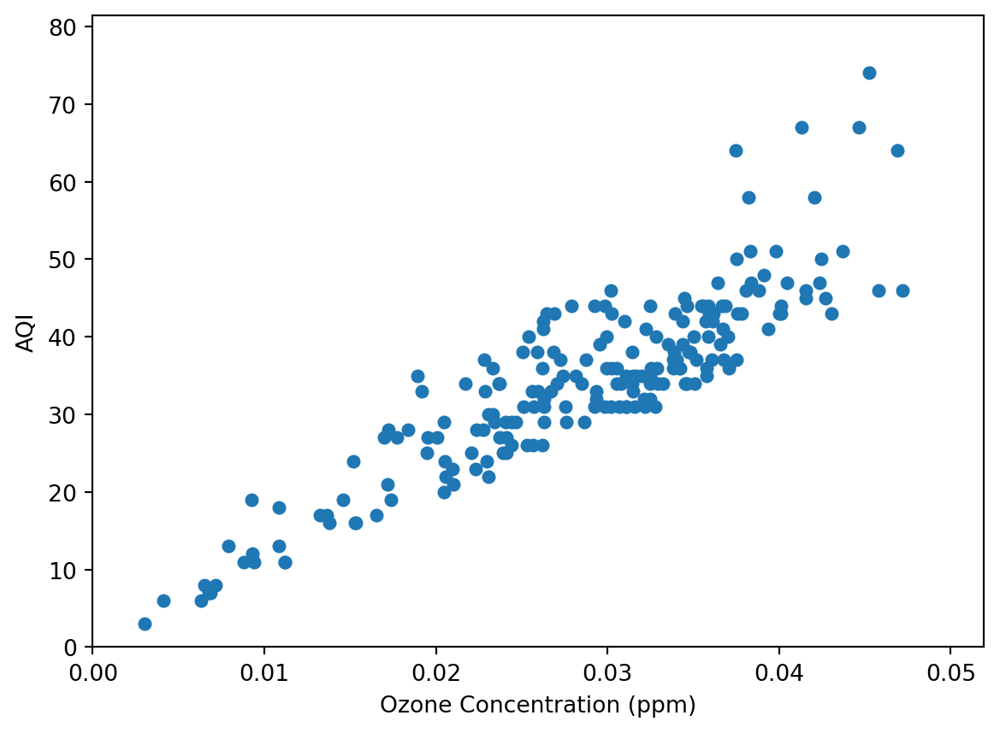
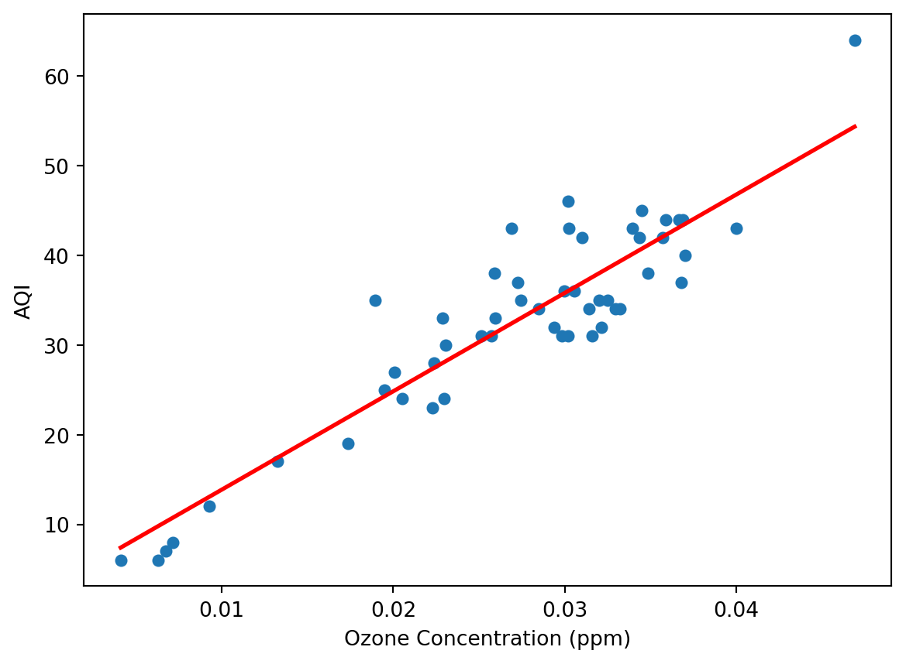
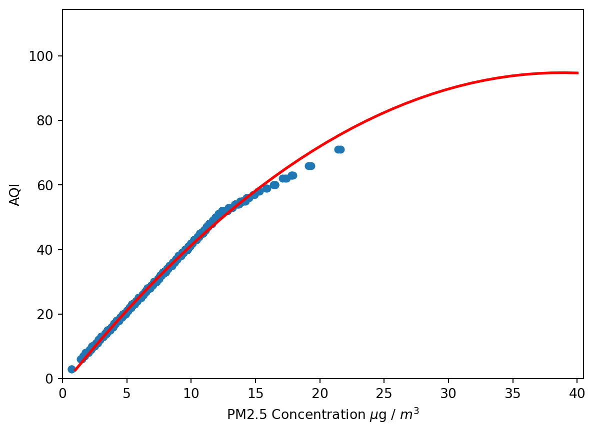

Linear regression represents one of (if not the) simplest class of machine learning models. From a given data set in which there exists one (or many) independent variables, we can perform a regression analysis to generate a linear (or nonlinear - more on that later) predictive model. Using these models, we can make relatively accurate predictions about the value of a dependent variable given the value of a correlated independent variable (or set of independent variables). You have likely performed the simplest of such regressions in a high school math class, where you may have been asked to find the equation of a line that passes through two points. That equation is, in a way, a model that you can use to ‘predict’ the value of some variable \(y\) based on the value of the independent variable \(x\).
In this post, I will be applying the above concepts to a United States Environmental Protection Agency dataset publically available on their website. Their database contains many different datasets pertaining to environmental information, but for this post I have selected a subset of their Air Quality Index (AQI) data. You can find their datasets here. Specifically, this dataset reports ozone concentrations detected in the air at different locations and times in 2022 (data published 11-14-2022). The AQI at each of these locations and times is also reported. There is an obvious correlation between ozone levels and AQI, after all, AQI is essentially a measure of pollution in the air. I would expect, had I not seen the data, that AQI will increase with increased levels of ozone. I do not, however, know the nature of this correlation (be it linear or otherwise), but I expect that performing regression analysis will reveal something about it. In the following code, we store the data in a dataframe and pick a subset of the dataset (specifically, data collected from a site in Washington D.C.) and select the ‘Arithmetic Mean’ column, which is the average concentration of ozone at a given site taken over an hour. I then plot that mean concentration against the measured AQI associated with the given concentration measurement.
Air Quality Index and Ozone Concentration
Code
import pandas as pdimport numpy as npimport matplotlib.pyplot as pltair_quality = pd.read_csv("Ozone_Summary_Data.csv")df = air_quality[air_quality['Local Site Name'] =='RIVER TERRACE']df = df[['Arithmetic Mean', 'AQI']]df = df.sort_values('Arithmetic Mean')plt.scatter(df['Arithmetic Mean'], df['AQI'], s=25)plt.xlabel("Ozone Concentration (ppm)")plt.ylabel("AQI")plt.axis((0, 1.1*max(df['Arithmetic Mean']), 0, 1.1*max(df['AQI'])))plt.show()

Figure 1: AQI Data - Ozone
The above scatter plot shows the independent variable, ozone concentration in ppm (parts-per-million), against the dependent variable, Air Quality Index (a dimensionless quantity). Examining the data qualita tively leads us to the conclusion that AQI does indeed increase with increased ozone concentration, as one might expect. It appears linear in many aspects, at least in the range displayed. There is plenty we can infer from looking at this data qualitatively, but this is a machine learning blog after all.
The data appears linearly correlated, and as such we will choose to perform a linear regression on it. We will use a popular Python data science and machine learning library, scikit-learn, to perform this regression. The specific model used in scikit-learn is called a least squares linear regression, which applies a linear least squares approximation of a function to the data. Essentially, model is created to optimize the square of the error between the value of the dependent variable predicted by the model and its actual value for a given independent variable. If you’ve taken a college-level linear algebra class, this method is usually taught as an important application of algebraic principles. I highly encourage any curious individuals to at least read about the mathematical foundation of this process.
Below is is Python code that performs a linear regression on a subset of the data (a “training” set), removes the test data from the dataset, and plots the resulting model along with the rest of the data (the “test” set). Training data should generally be between 70% and 80% of the dataset with the rest used for testing. Additional code is present to display quantities useful for evaluating the model.
Code
from sklearn.linear_model import LinearRegressionimport sklearn.metrics as sk# Get sample data and remove from datasetaqi_train = df.sample(frac=.75)aqi_test = df.drop(aqi_train.index)# Load data to test and training listsaqi_x_train = aqi_train['Arithmetic Mean']aqi_x_test = aqi_test['Arithmetic Mean']aqi_y_train = aqi_train['AQI']aqi_y_test = aqi_test['AQI']# Load values into NumPy arraysx = np.array(aqi_x_train).reshape((-1, 1))y = np.array(aqi_y_train)# Define model and make predictionsmodel = LinearRegression()model.fit(x, y)y_prediction = model.predict(np.array(aqi_x_test).reshape((-1, 1)))# Plot the dataplt.scatter(aqi_x_test, aqi_y_test, s=25)plt.plot(aqi_x_test, y_prediction, color="red", linewidth=2)plt.xlabel("Ozone Concentration (ppm)")plt.ylabel("AQI")plt.show()print("Mean Squared Error: %.2f"% sk.mean_squared_error(aqi_y_test, y_prediction))print("Coefficient of Determination: %.2f"% sk.r2_score(aqi_y_test, y_prediction))

Figure 2: A Linear Regression on Ozone-AQI Data
Mean Squared Error: 20.11
Coefficient of Determination: 0.84
Here, we have the results of the linear regression superimposed on the test data. We can see the red line appears to take a linear form (\(y = mx + b\)). Below the plot, I printed out the Mean Squared Error (MSE) and the Coefficient of Determination (often called the R-squared value). These two metrics tell us a great deal about the accuracy and quality of our model. The MSE is, as the name suggests, the average of the squares of the errors between expected values based on the model and the observed data in the test set. This gives a good idea of how close a regression line is to the data points it was regressed on. In the context of machine learning, we calculate this value from the test set after training on the training data. Out side of an MSE of 0 (perfect model), in isolation, MSE does not give much information about the quality of a model. It does, however, allow us to make comparisons between models where a model might be considered “better” if the MSE of one model is significantly lower than that of another. The other metric, the R-squared value, gives a measure of the proportion of variation in the dependent variable (in our case, AQI) that may be predicted based on the independent variable (ozone concentration).
Nonlinear Regression
While linear correlations may be easily modelled by linear regression, it should come as no surprise that nonlinear correlations require a different type of regression. Fittingly, regression performed to capture nonlinear correlations is called nonlinear regression. This encompasses any nonlinear relationship you could think of including polynomial regression, logistic regression, and exponential regression. In this section, I will capture a nonlinear relationship between an independent and dependent variable. From the same data source as the linear model above, I will pull the PM2.5 dataset, which contains PM2.5 (small particles in the air) concentrations and various other statistics as in the first dataset. As with the first example, I will plot the concentration against AQI values.
Qualitatively, the data appears to be quite clustered and we see that AQI increases with the PM2.5 concentration. The data appears somewhat linear for low values, but appears to curve slightly before continuing to ascend, albeit slower. A linear model would have poor performance modelling this data and poor predictive value, so I will select a nonlinear model. We will perform a polynomial regression on the data to generate a model here, specifically with a degree of two. Performing this regression will generate a best-fit line to the data of the form \(y = ax^2 + bx + c\). The same metrics will be applicable for model evaluation here as were for the linear model earlier. As with the first model, the following Python code takes a random sample from the dataset and trains the model before using it to predict values from the reserved test data. The predicted values are then compared to the actual values in the test set and the model is evaluated for its quality and accuracy. Below is commented code and the produced graph:
Code
from sklearn.preprocessing import PolynomialFeatures# Get sample data and remove from datasetaqi_train = df.sample(frac=.75)aqi_test = df.drop(aqi_train.index)# Load data to test and training listsaqi_x_train = aqi_train['Arithmetic Mean']aqi_x_test = aqi_test['Arithmetic Mean']aqi_y_train = aqi_train['AQI']aqi_y_test = aqi_test['AQI']# Load values into NumPy arraysx_train = np.array(aqi_x_train).reshape((-1, 1))y_train = np.array(aqi_y_train)x_test = np.array(aqi_x_test).reshape((-1, 1))y_test = np.array(aqi_y_test)# Define model and transform datapoly_features = PolynomialFeatures(degree=2, include_bias=False)x_poly = poly_features.fit_transform(x_train)x_test = poly_features.transform(x_test)poly_model = LinearRegression()poly_model.fit(x_poly, y_train)# Predict outcomey_pred = poly_model.predict(x_test)# Plot the data (we create data here to make the graph prettier)x_graph = np.linspace(1, 40, num=39).reshape((-1, 1))x_graph_poly = poly_features.transform(x_graph)y_graph = poly_model.predict(x_graph_poly)plt.scatter(aqi_x_test, aqi_y_test, s=25)plt.plot(x_graph, y_graph, color='red', linewidth=2)plt.axis((0, 1.1*max(df['Arithmetic Mean']), 0, 1.1*max(df['AQI'])))plt.xlabel("PM2.5 Concentration "+r'$\mu$g / $m^3$')plt.ylabel("AQI")plt.show()print("Mean Squared Error: %.2f"% sk.mean_squared_error(y_test, y_pred))print("Coefficient of Determination: %.2f"% sk.r2_score(y_test, y_pred))

Figure 4: A Polynomial Regression on PM2.5-AQI Data
Mean Squared Error: 0.48
Coefficient of Determination: 1.00
As we can see, the model fits the data extremely well and the MSE and r-squared values show that the model is quite good at accurately predicting the dependent variable. Depending on the random sample taken, there may be outlier values toward the higher end of the model. I encourage you to run the code several times until this behavior is seen. This shows a limitation common to regression methods: models may not be excellent at capturing the relationship between two features if the dataset does not adequately capture their relationship in a well-distributed manner of the range of data. The r-squared value is likely 1.00 or very close to 1.00 every time the code is ran and thus suggests the dependent variable is extremely predictable based on the independent variable. Similarly, the MSE for the model is likely very close to 0.00, which implies the data is clustered very closely to what the model predicts.
If you are familiar with the effects of PM2.5, you may know that the effect it has on AQI is significant even at low concentrations. As the data and resulting model show, there is a very strong, almost linear relationship at lower concentrations of PM2.5 particles. From my own research, I knew that PM2.5 has a diminshing effect (i.e. lower increase in AQI) as concentration increases. While this is somewhat adequately captured by the model, the relative lack of data at high concentrations prevents the model from capturing this adequately. A logarithmic function may have better modelled this data, but in any case, it is clear that a nonlinear model fits the data and predicts outcomes better than a linear model would have. Performing a linear regression on the data and comparing the MSE and r-squared values is a great follow up activity after reading this post.